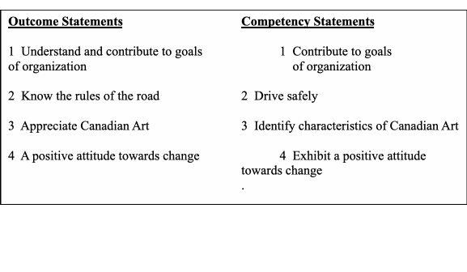

EDUCATION OUTCOMES
Outcomes - what is expected at a given stage along a journey
While disposing of memorabilia recently, I came across, and actually reread, a number of papers on education. Most of the critical articles express concerns that the education system cannot adequately prepare students for life and work in the 21st Century. I am concerned about that issue also. The rereading, together with a scan of the internet and my own experience in the education field, confirmed my view that there is a major difference between parents/taxpayers and professional educators about the role of schools. I call it expectations but outcomes, perhaps, may an even be a better descriptor. As background, let me say a few words about teaching and learning.
. In several states, educators and policy makers are attempting to change the way we measure the effectiveness of education from an emphasis on traditional inputs, such as course credits earned and hours spent in class, to results or outcomes.
Teaching and Learning
Learning is a process of change. When a learner learns, he/she acquires more or different information, skills or attitudes, or, in the words of educators, change may occur in the cognitive, affective or psychomotor domains. Simply put, a person who has learned has new or different attitudes, skills or information or some combination thereof. Learning is very much an individual matter; only the learner can learn. To help a learner to learn is to help bring about changes in the learner. The stimulus for learning may be internal or external and the actual learning may take place in a group setting or when the individual is alone. A teacher does not teach a class; a teacher teaches a number of individuals at the same time in a group setting.
The role of a teacher is to stimulate learning – to create a set of circumstances so that a learner changes behaviour. Teachers help change lives; they do it in a variety of ways including providing information, asking questions, setting time lines, assigning projects or home work, organizing field trips, being a role model, engaging learners in discussions, having learners undertake group projects and assessing performance.
Learning is not limited to what happens in school, although this paper is primarily focused on school based learning. People often confuse education and schooling; that thinking is prevalent both inside and outside the system. We do not similarly confuse health and hospitalization, religion with church attendance or citizenship with court appearances. I am not sure, therefore, why we continue to speak of education when we mean schooling.
Good’s Dictionary of Education defines schooling as “individual training or education received in an educational institution, military or civilian.” Education, on the other hand, is defined as “the aggregate of all processes by means of which a person develops abilities, attitudes and other forms of behaviour of positive value in the society in which he lives.” In my words, schooling is that part of one’s education resulting from one’s experiences while in school.
If teachers are helping learners to change behaviour, it behooves them to have a clear idea as to what the desired behaviour really is. For clarity, I use expectations, graduation requirements and outcomes to differentiate between long term and short term descriptions of what is to be learned.
Life roles
I have had many discussions about this subject with people of all ages and of many walks of life, including people in the business community. It was not a formal survey and this is the first time I have put pen to paper in an attempt to clarify my own views and to share them with others.
My thinking is very clear. In the long view of education, the role of schools is to help people to develop the skills, attitudes and knowledge required to be good citizens. Good citizens fill many roles in their lifetime and the emphasis varies throughout their lives. This is most succinctly captured in the Oregon Education Act for the 21st Century which identifies the following life role of Oregonians:
Individual
Learner
Producer
Citizen
Consumer
Family Member
This is as clear a statement as I have encountered and certainly reflects my view as to the starting place for educational planning. Having said that, however, I am aware that readers may hold other views.
The discussion about schools must start here. I believe that this is where differing expectations begins to occur. Unless this is clear and agreed to, we cannot develop the school system we need or want. These are long term goals and, as such, change little over the long term. Since the focus of this paper, however, is the end of secondary school, I refer to the next set of descriptions as graduation requirements.
Educational Outcomes.
Although the identification of outcomes is only a small step in the planning process, it is the foundation of future planning; improper, inadequate, imprecise objectives results in a weak if not faulty system. Improvement in education will only come when outcomes are clear, unambiguous and relevant. The ones now used as a basis for educational planning do not meet those criteria. Having worked in an outcomes-based system, however, I believe that I have a reasonably good understanding of outcomes as a basis for developing school programs
I was delighted with the arrival of Outcomes Based Education (OBE); I thought that it was simply a more “academically respectable” name for competency based education but the more I learned the more uneasy I became. On closer examination, I found significant differences.
In summary, competency based education:
Is organized around needs of individuals rather than groups of learners
Is more specific in the way outcomes/competencies are described
Uses words familiar to the users rather than an academic language
Draws its statements from the community/occupation/life rather than from disciplines or textbooks
Identifies actions and not knowledge
Emphasizes performance not grades or time required to learn
Bases assessment on observed performance rather than tests, assignments and exams
Examples of competencies and outcomes are shown in the following table:

Outcomes are expectations. They identify what is expected at a given stage along a journey. In this paper, the journey is mostly about the schooling component of one’s education; even with this, there are many stages but this paper focuses on the stage generally referred to as high school graduation. Desired outcomes determine what is to be taught, how it is to be taught, how results are to be measured.
I have now used the expectations and outcomes interchangeably; now I add competencies. Although I know that purists define them differently, for the purpose of this paper I treat them as one and the same. From my review of the literature, it appears that the term “outcomes” is widely accepted in education and “competencies” in the field of training. Outcomes are thought to be a bit broader and more appropriate for education; on the other hand, if one is a student of Bloom’s Taxonomy of Education, one might say that competencies represent a higher level of learning than doe outcomes. Some jurisdictions use learning outcomes to describe exit outcomes. is another way From a practical point of view, however, and for the purpose of this paper, I consider the terms interchangeable.
The concept of outcomes is simple. To quote from an article on Outcome-based education at www.answers.com
“Start by developing a clear picture of what learners should ultimately be able to do successfully at the end of a significant educational experience (i.e., the outcome). Then base (i.e., develop) the curriculum, instruction, assessment, and reporting (i.e., education) directly on that clear picture. This is a simple matter of clearly defining what one wants learners to be able to do (the end) before the beginning, teaching them how to accomplish that end, and then assessing and documenting the end they were to achieve in the first place.”
Let me be very clear at this point, in speaking of outcomes I am only referring to a series of statements describing performances that a high school graduate must be able to demonstrate before receiving a high school diploma.
Confusion abounds. Outcomes and Outcomes Based Education (OBE) are not the same; neither are competencies and Competency Based Education (CBE). School systems may use outcomes and competencies in a variety of ways some times referred to as traditional, transitional and transformational – but that is a separate issue. OBE, CBE and many innovations go beyond the identification of outcomes and describe a preferred way, at least by the promoter of the model. To add to the confusion, is the concept of mastery learning, the spiral curriculum and standards based education. Outcomes are foundational to a meaningful education whatever the teaching/learning model in which they are used
It may be useful to say a few words about Curriculum Based Outcomes (CBO) that are so widely used in education and, although important to the teacher, are at odds with the expectations of the customer. To draw a parallel for a moment, curriculum outcomes may be similar the describing the outcomes of a medical procedure. They are important but do not respond to the patient’s question “Will I be able to walk again?
Characteristics of Outcomes
Educational outcomes constitute a clear set of expectations for each student at any identified level. Educational outcomes:
Are drawn from the community in which the student will live or operate and reflect adult performance; they are not drawn from disciplines and textbooks. Based on the view that the role of the school is to prepare students for life, outcomes will be drawn from the community in which the person will live not from academic disciplines. Disciplines are taught in support of life-based outcomes.
Identify observable and measurable actions that are ascribable to each individual not just to a class. Objectives begin with such words as direct, discuss, explain, construct, present, organize, etc. Understand and know are not acceptable when stating an objective; instead one must search for the word or words that describe the demonstration proving that understanding or knowing has taken place.
Are written in such a way as to convey a single, clear and unambiguous action. The curriculum outcome in the box above, for example, includes writing, speaking, listening and reading and includes both technology and mathematics is much too broad for a single outcome.
Achievement should be measured based on the results of the learning experiences and not on the learning experiences themselves.
Benefits of educational outcomes
Basing education on educational outcomes, I believe the use of educational outcomes:
Promotes high expectations
Prepares graduates for life and work
Fosters more authentic assessment
Encourages innovation
Better prepares students to become lifelong learners
Conclusions
As a result of my review of the literature and my personal experience in education, I have concluded that:
There is significant gap between users and providers as to the role of schools
At least some of the difference results from the manner in which school documents are written
Clarity of purpose and achievement would be improved through the development of educational objectives rather than the curriculum objectives now in use.
Recommendations
Based on my review of the literature and my personal experience in education, I recommend that:
A clear statement of the ultimate purposes of our school system be developed and disseminated.
Outcomes be developed in terms of each high school graduate be developed and disseminated
Student achievement/performance be reported in relation to each outcome.
BIBLIOGRAPHY
John Burke, Editor Competency Based Education and Training, Palmer Press, Philadelphia, 1989